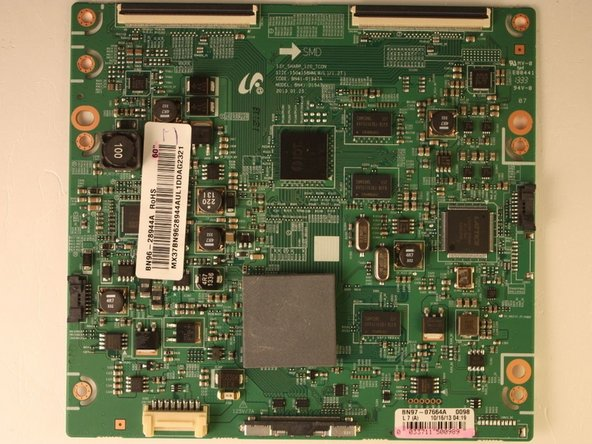

Separate a TV timing-board fault from a panel fault
Compare picture patterns and parts, practise ribbon handling on detached boards and learn when an exact T-Con swap is justified.
Compare the symptom on screen before touching cables
For an LCD TV that has a backlight but shows lines, half a picture or a blank image, start with P99's closed-cabinet tests. See whether the symptom appears in the volume overlay and built-in Picture Test, across multiple sources and after warm-up. Use a stable camera angle and one reference image for comparison. A line in the same place over every source can be in the display path, including a ribbon, timing board, bonded driver or glass. The result alone does not name a replacement board. Samsung's test for lines across sources.

Photo by Eric Cheung and iFixit contributors, scaled with on-page callouts. Original repair photograph · CC BY-NC-SA 3.0.

Photo by Arwedus and iFixit contributors, scaled with on-page callouts. Original repair photograph · CC BY-NC-SA 3.0.
Watch the ribbon handling. Observe how the ShopJimmy technician checks the assembly label, opens the connector lock and lines up the ribbon's insertion mark. This video demonstrates a different Samsung service board. Use it to learn handling, then follow the exact service documentation for your set. ShopJimmy's Samsung T-Con replacement demonstration.
Test each plausible path from the observations
| What you have proved with the case closed | What the evidence supports | Next step |
|---|---|---|
| Built-in menu and patterns stay clean, one external source has lines | The set can produce a clean image on its own. | Test a known-good cable and alternate source on that input before opening the cabinet. |
| The same lines cross built-in patterns and normal video | The fault travels with the set. Display processing and panel hardware still need separating. | Record affected area and temperature behaviour. Check the exact display path and whether a separate timing board exists. |
| Backlight is on, sound is good, built-in menu never appears | Power and some audio functions work. That does not establish the video supply, timing data or panel state. | Use qualified model-specific checks or a proven exact substitute if justified, one assembly at a time. |
| Cracked substrate or visibly torn bonded edge cable | There is panel-level mechanical damage. | Quote the exact panel and installed cost. A compatible timing board cannot restore the broken glass or bond. |
Use the panel and assembly identity to find a replacement
Work through Eric Cheung's reported UN60FH6003FXZA case. The set showed a lit dark screen with audio. The author replaced the separate board and reported the picture returned. The example lists BN96-28944A and shows another label on the board. This is a repair outcome for that set. Two TVs sold under the same retail model can have different panel versions. Record the complete TV model suffix, version where marked, exact panel label, assembly part number and photos of both sides. Confirm compatibility and return terms before ordering. Use an OEM service listing or a specialist verified cross-reference.
Practise a swap on already detached parts
Use a scrap T-Con and matching loose detachable ribbon on an ESD mat. Photograph both sides and the fully inserted witness line. Mark which plug runs to the mainboard and which ribbons run to the panel. On a different design, verify whether the timing circuit is integrated. A bonded panel flex is not a slip-out ribbon.
Identify the release type from the guide. Open the lock before extracting a removable ribbon. Practise moving straight and keeping the contact face clean. Reinsert to the manufacturer witness line, square the two edges and close the latch without forcing it. On the loose assembly inspect for a bent lock, corrosion or misalignment from both ends.
Dry-fit its bracket, thermal pads and insulation in the original positions. For a real TV, a competent service technician should follow the manufacturer's isolation, stored-energy and safety procedures before handling internal assemblies. All TV connections change in the verified isolated state. Complete the reassembly and required electrical checks before an external powered retest. HSE guidance for a TV service bench.
Compare the same closed-case test image, remote overlay and source inputs before and after. Retest cold and after normal warm-up. A successful exact substitute is evidence for the original parts combination. If it brings no change, document the result and stop buying boards until the remaining path is proven. T51 how image and light paths meet.